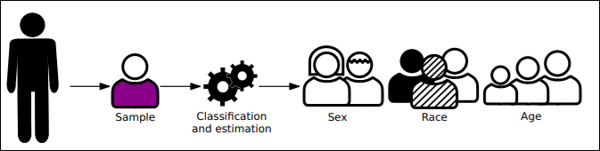

Intermediate Report
Introduction

Fairness evaluation studies across Biometric Modalities

Fairness in Face Recognition

Ocular : Motivation

Research Objectives

Covariates to be Studied

Datasets Used

Gender Classification

Across Models
Across Models on UFPR Periocular - RGB

Across Models on Notredame Ocular - NIR

Across Varying Data Balances and Gender
UFPR - RGB


Notredame - NIR


Across Age
UFPR - RGB
| CNN | Young | Middle-Aged | Older | |||
|---|---|---|---|---|---|---|
| Male[%] | Female[%] | Male[%] | Female[%] | Male[%] | Female[%] | |
| ResNet-50 | 98.39 | 98.19 | 100 | 96.67 | 99.17 | 98.06 |
| MobileNet-V2 | 99.97 | 99.9 | 100 | 99.7 | 100 | 100 |
| ShuffleNet-V2-50 | 98.23 | 97.57 | 98.28 | 97.56 | 94.76 | 98.89 |
| EfficientNet-B0 | 95.89 | 97.54 | 98.58 | 96.44 | 95.23 | 86.94 |
- Middle Aged adults slightly outperformed the other two groups in gender classification by about 1% − 2%.
- Possible explanation: Stable and distinct gender cues for middle aged adults when compared to young and older adults.
- Younger adult population performed the best in age classification by about 25%.
- This could be due to distinct variation in the features attributed to the growing stage of the youth population over middle-aged and older adults
Across Race
VISOB + Notredame- Ocular RGB
| Race | Male | Female |
|---|---|---|
| White | 82.42 | 89.92 |
| South Asian | 96.51 | 88.88 |
| Black | 78.57 | 72.10 |
| Middle Eastern | 71.12 | 93.08 |
| Latino | 84.83 | 91.61 |
- South Asians and Caucasians overall works better.
- This make sense since it contains the majority of the dataset
Face VS Ocular
FlickrFaceHQ-Aging - RGB
- Face performs better than Ocular in Gender Classification on RGB
- This may be because of the low quality of the crop
| Male | Female | Modality |
|---|---|---|
| 97.6 | 96.8 | Face |
| 92.5 | 91.6 | Ocular |
Notredame - NIR
Face

Ocular
- Face performs better than Ocular in Gender Classification on NIR
- This may be because of the low quality of the crop
Subject Verification
Across Gender
UFPR - RGB
Training Set : All

Training Set : Male
Training Set : Female
Notredame - NIR
Training Set : All
Training Set : Male
Training Set : Female

VISOB - RGB
Across Varying Data Balances and Models
UFPR - RGB


Notredame - NIR
Across Age
UFPR - RGB
| CNN |
Age-Group |
EER(%) | FNMR(%) @ FMR | |||||||
|---|---|---|---|---|---|---|---|---|---|---|
| 0.01 | 0.1 | |||||||||
| L | R | L+R | L | R | L+R | L | R | L+R | ||
| ResNet-50 | Young | 8.60 | 9.52 | 9.06 | 37.63 | 35.35 | 36.49 | 53.74 | 54.03 | 53.89 |
| Middle-Aged | 8.62 | 9.08 | 8.85 | 30.76 | 25.04 | 27.9 | 52.23 | 48.55 | 50.39 | |
| Older | 11.01 | 11.00 | 11.01 | 15.47 | 19.34 | 17.405 | 30.67 | 30.67 | 30.67 | |
| MobileNet-V2 | Young | 7.75 | 7.32 | 7.54 | 33.21 | 26.11 | 29.66 | 51.61 | 48.28 | 49.95 |
| Middle-Aged | 9.08 | 8.68 | 8.88 | 29.18 | 28.14 | 28.66 | 51.17 | 51.31 | 51.24 | |
| Older | 8.04 | 9.63 | 8.84 | 18.54 | 13.47 | 16.005 | 39.47 | 36.00 | 37.74 | |
| ShuffleNet-V2 | Young | 6.93 | 6.96 | 6.95 | 37.63 | 38.09 | 37.86 | 56.44 | 56.26 | 56.35 |
| Middle-Aged | 8.32 | 9.25 | 8.79 | 37.38 | 46.07 | 41.73 | 55.08 | 61.10 | 58.09 | |
| Older | 9.72 | 8.18 | 8.95 | 30.53 | 30.80 | 30.67 | 44.93 | 53.47 | 49.20 | |
| EfficientNet-B0 | Young | 7.64 | 9.61 | 8.63 | 32.54 | 27.00 | 29.77 | 55.40 | 48.38 | 51.89 |
| Middle-Aged | 6.95 | 9.03 | 7.99 | 38.07 | 26.69 | 32.38 | 49.12 | 49.31 | 49.22 | |
| Older | 9.34 | 12.08 | 10.71 | 20.80 | 23.33 | 22.065 | 39.73 | 41.74 | 40.74 | |
- Younger adults obtained performance identical to middle-aged individuals in user verification.
- Older adults’ performance differs slightly in terms of EER with only a 1% decrease, but the performance dropped at lower FMR points.
- The possible reason could be due to likely inferior quality of image capture, and relatively higher inter-class similarity due to wrinkles and folds on the skin.
Sreeraj Ramachandran
Graduate Research Assistant
My research interests include Computer Vision, Biometrics, Bias AI, GANs and adversarial Attacks